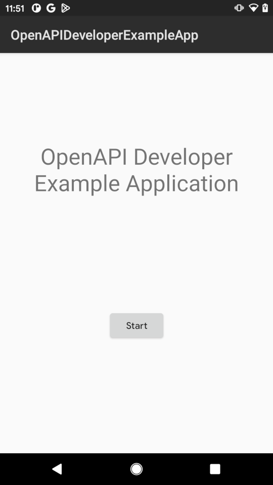
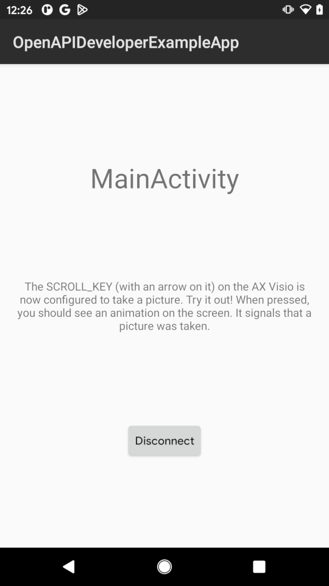

Using the example application
This tutorial should walk you trough the necessary steps to build and deploy the OpenAPI Developer Example Application.
Prerequisite
You must have
- a personal computer which is capable of building Android applications (This is possible on Windows, Linux and MacOS),
- an Android smartphone to run the example application,
- an AX Visio binocular and
- an personalized API key for using the OpenAPI contexts (See the tutorial Requesting an API key).
Step 0: Android Studio Setup
If you are interested in the OpenAPI of the AX Visio you are mostly already an Android Application developer. So you should have a working AndroidStudio installation on your computer. If not, follow the guide Install Android Studio.
Step 1: Clone the example code
On your computer clone the example code. E.g. by executing the command
$ git clone https://github.com/swarovskioptik/openapi-developer-example-app.git
You can also use the Github CLI for that.
Step 2: Open the project in Android Studio
It's possible to build and deploy the project on the command line, but this tutorial we use Android Studio. It will provide some convenience features like selecting the development target and staring the smartphone application automatically.
First open Android Studio by using the launcher menu of your operating system. Then click File > Open… in the top menu bar and select the directory of the freshly checkout repo.
Android studio starts parsing and executing the gradle build system. This process will fail with the error message
Please add 'OPENAPI_API_KEY' property!
This is o.k. for now. It will be fixed in the next step.
Step 3: Set the API key
You must add your API key to the gradle build systems. First go into the root directory of the repository. Either with an file browser or in the left project window of Android Studio.
Open the file local.properties. The file should already exist, because
Android Studio created it when you first opened the project. If the file does
not exist yet, you can also create it.
After that add the following line to the end:
OPENAPI_API_KEY = <Add your API key here>
And replace the brackets with your API key.
Now the parsing and executing of the gradle build system should finish successfully. Click Try Again in Android Studio to restart it.
Step 4: Build the example application
This can be either done on the command line or with Android Studio. The easiest way is to use Android Studio, because it also allows you to deploy and start the example application on your smartphone, too.
In Android studio click Build > Make Project in the menu bar at the top. The application should built successfully.
Step 5: Deploy it on your smartphone
After building the application with your API key, you should run it on your smartphone. For that your smartphone must be in developer mode and connected to your computer. Either with a USB cable or with the wireless debugging feature of Android over Wi-Fi.
For instructions please read the Run apps on a hardware device Guide for Android Studio.
If your phone is setup and connected, you can deploy and run the application by clicking Run > Run 'app' from the menu bar at the top.
On your smartphone you should see the following screen now:

Step 6: Connect to the AX Visio
Your freshly built example app is running on your smartphone now. The next steps are to connect the app with your AX Visio device.
For that the example shows instructions on the screen that walks the user trough the process. In detail these are the following steps:
Grant permissions and enable Bluetooth
On the smartphone touch the Start Button to start the connection process.
Now you should see a screen that tells the user to enable Bluetooth and grant the necessary runtime permissions. You should touch the button and grant the necessary permissions to the application. Then you should enable Bluetooth in the settings menu of your smartphone.
When both requirements are fulfilled, the next screen appears.
Search and connect to the AX Visio
The next screen of the app tells the user to start the AX Visio. Long press the power of the AX Visio until you see that the status LED blinking green. The AX Visio is booting now.
When the AX Visio runs and the smartphone has found the AX Visio device, the button on the screen is clickable and also shows the name the found device.
Click the button to start the connection process. If you connect your smartphone with the AX Visio for the first time, your smartphone shows a pairing request in the notification area. Touch Pair & Connect to continue.
To finish the pairing process, you must enter a PIN on the smartphones display. The PIN is shown in the display of the AX Visio. After entering the PIN and continued the dialog, you have finished the paring process.
Start the OpenAPI Inside Application
The example application is connected to the AV Visio. Now you have to start the OpenAPI Inside Application on the AX Visio. The example app also shows instructions on the screen.
Rotate the mode selection wheel to the symbol of the OpenAPI. It looks like

The OpenAPI is successfully started on the AX Visio, when you see the text "Please Connect" in the UI of the binocular. Trough the binocular you should see
Then the Continue button in the example application is clickable, because the OpenAPI is available on the AX Visio. Touch the button to start the main screen of the example application.
Step 7: Using the application
Now the example app is connected to the AV Visio and uses the OpenAPI. You should see the screen:

This means that your application succesfully connceted to the AX Visio and successfully used one feature of the OpenAPI: it configured a key to take a photo.
Outlook
Congratulations! Now you have built, deployed and ran your first Android application that used the OpenAPI of the AX Visio.
As next steps you can look at the code of the example application or read one of the How-To guides.